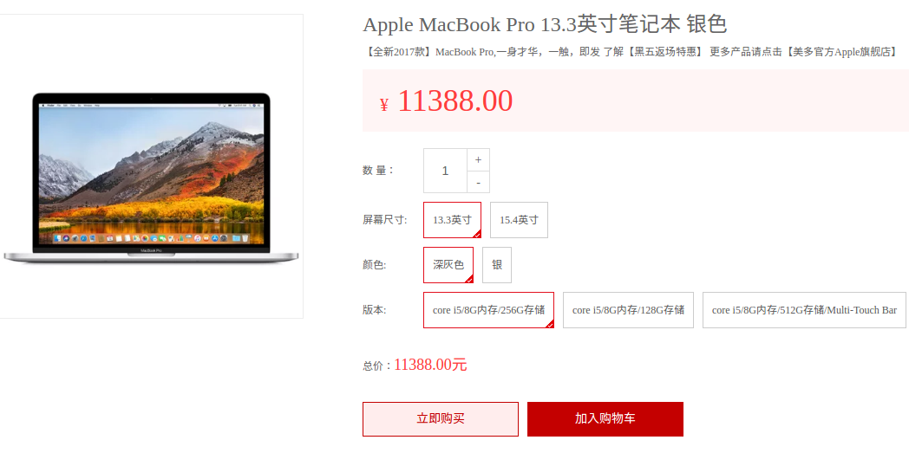
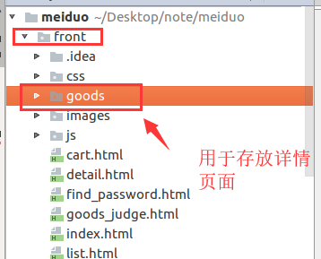

商品详情页

商品详情页依然采用页面静态化技术。
商品详情页的静态化由运营人员在编辑商品信息时触发生成静态化页面。
异步调用
在celery_tasks中新建html/tasks.py任务
import os
from celery_tasks.main import app
from utils.goods import get_categories
from django.template import loader
from django.conf import settings
from goods.models import Goods,SKU
@app.task(name='generate_static_sku_detail_html')
def generate_static_sku_detail_html(sku_id):
# 获取分类数据
categories = get_categories()
# 获取当前商品数据
sku = SKU.objects.get(id=sku_id)
sku.images = sku.skuimage_set.all()
# 获取面包屑数据
goods = sku.goods
goods.channel = goods.category1.goodschannel_set.all()[0]
# 获取商品规格项ids
sku_key = []
sku_specs = sku.skuspecification_set.order_by('spec_id')
for sku_spec in sku_specs:
sku_key.append(sku_spec.option.id)
# 构建商品规格
# 获取所有商品,
skus = goods.sku_set.all()
# 构建不同规格参数（选项）的sku字典
# spec_sku_map = {
# (规格1参数id, 规格2参数id, 规格3参数id, ...): sku_id,
# (规格1参数id, 规格2参数id, 规格3参数id, ...): sku_id,
# ...
# }
spec_sku_map = {}
for s in skus:
s_peces = sku.skuspecification_set.order_by('spec_id')
# 用于记录 规格参数id
key = []
for spec in s_peces:
key.append(spec.option.id)
# 添加数据
spec_sku_map[tuple(key)] = s.id
# 获取当前商品的规格信息
# specs = [
# {
# 'name': '屏幕尺寸',
# 'options': [
# {'value': '13.3寸', 'sku_id': xxx},
# {'value': '15.4寸', 'sku_id': xxx},
# ]
# },
# {
# 'name': '颜色',
# 'options': [
# {'value': '银色', 'sku_id': xxx},
# {'value': '黑色', 'sku_id': xxx}
# ]
# },
# ...
# ]
specs = goods.goodsspecification_set.order_by('id')
# 若当前sku的规格信息不完整,则不再继续
if len(sku_key) < len(specs):
return
# 针对于商品数据进行遍历
for index, spec in enumerate(specs):
# 复制当前sku的规格键
key = sku_key[:]
# 该规格的选项
options = spec.specificationoption_set.all()
for option in options:
# 在规格参数sku字典中查询符合当前规则的sku
key[index] = option.id
option.sku_id = spec_sku_map.get(tuple(key))
spec.options = options
# 组织上下文
context = {
'categories': categories,
'goods': goods,
'specs': specs,
'sku': sku
}
template = loader.get_template('detail.html')
html_text = template.render(context)
file_path = os.path.join(settings.GENERATED_STATIC_HTML_FILES_DIR, 'goods/' + str(sku_id) + '.html')
with open(file_path, 'w') as f:
f.write(html_text)
重新执行celery
celery -A celery_tasks.main worker -l info
在front文件夹中,创建一个 goods文件夹

在template中添加detail.html模板
在js中添加detail.js文件